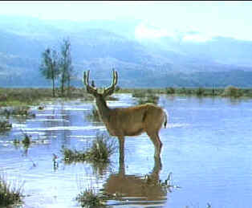

| Shane
(SE)/A,C+ |
| Paramount/1950/117/FS
1.33 |
The
closing line echoing in the backdrop of the big Western
landscape, "Shane, come back." as the beautiful and
sentimental theme by composer Victor Young reminds the audience
of everything that has come to pass is a haunting and memorable
film finale. Happily, Shane is back, and this time it's
on DVD.
So many classic Western conventions are explored in Shane,
but the execution by director George Stevens makes this a quintessential American
film. You think Sergio Leone's
man with no name films starring Clint Eastwood were the
first to explore the theme of the stranger coming to town and
making a difference? Shane came first. Shane came
before Yojimbo inspired Leone too. It's the
homesteaders against the ranchers, it's a way of life coming to
an end as a gunfighter realizes that the way of the gun must
eventually change, but mostly Shane is about goodness and
right.
Shane comes to the Starrett ranch and
begins working as a hand for Joe Starrett. He admires the solid
goodness of Marion Starrett and Joe Starrett's sense of family.
He befriends Little Joe, who idolizes the confident stranger.
The homesteaders, led by Starrett, are slowly being pushed off
their land by cattleman Rufus Ryker. When things heat up, Ryker
brings in a cold-blooded gunman, Wilson. Joe Starrett wants to
stand up to Ryker and Wilson on his own, but it is Shane who
adjusts his gun belt and rides into town to confront his fate.
Stevens handles the majestic setting
with natural grace. He sets the scene with a master's touch.
From the opening moments as Shane rides from the horizon,
framed through the antlers of a deer, onto the Starrett
homestead, to the final fade out as Shane rides back into
those mountains, the director uses the camera to comment on his
characters. Even the fights evolve with economic grace.
Stevens keep a leash on the fisticuffs, but boy, they are
exciting. The final shoot-out is as sudden as rattle snake
striking from a dusty desert hole.
 |
| Shane
arrives, beautifully framed through antlers. ©Paramount |
Spare dialogue and classic
confrontations are at the heart of screenplay from western
novelist A.B. Guthrie. (Guthrie's classic The
Big Sky, directed by Howard Hawks is still missing from
DVD.) Stevens gets the most from the material,
embellishing the film with details that bring great authenticity
to the film.
The casting, which the audio
commentary has interesting facts to reveal, is outstanding. Alan
Ladd gives Shane a simple eloquence, reciting his dialogue in a
straightforward manner. Ladd works beautifully with young
Brandon De Wilde, who gives Little Joe a special quality.
Stevens recognizes the magic of the young actor's eyes as the
cameras lingers in close-up, catching the wonder expressed
by Little Joe as he witnesses the events that unfold in Shane.
Jean Arthur is a fantastic choice for Marion
Starrett. Still beautiful, she radiates strength, embodying the
spirit of the pioneer woman. Van Heflin imbues Joe Starrett with
uncompromising simplicity and sense of justice. Finally, there's
Jack Palance, making his screen career with
memorable precision as the gunfighter Wilson.
The fine commentary provided by the
director's son, George Stevens, Jr. and Associate Producer Ivan
Moffat adds a lot to the Shane package. Did you know Montgomery
Clift was the first choice of director Stevens or that William
Holden was set to play the Starrett role. Alan Ladd was
delighted by the Stevens direction, noting that he gave him time
to pause. Ladd thought his "pauses" were the best part
of his acting.
This looks like the same transfer that
was used for the laser disc of several years ago. Many scenes
are not as sharp as the best DVDs. The color is fairly stable
and remains vital. Color registration is good. Day for night
work looks quite good. The DVD does a good job of capturing the
day for night photography which looks bathed in the glow of
moonlight. The sound is clean, dialogue easy to understand
and the score produced in lush chords.
|
|

The
Feature
Archive has articles ranging from Akira
Kurosawa to Blonde
Bimbos.

Click on the image above for a
"dream interview" with director John
Ford.

Need
a daily fix of movie quotes. Reel Quotes Newsletter has
the answer. Click on the Reel Quotes symbol for more.

The
Movie Poster Archive include extensive poster images from the
films of stars like Susan Hayward, Kirk Douglas, Katharine
Hepburn and many more. Our featured star is William
Holden.

 A huge selection of French movie posters with images galore. Don't miss this site if you
ate interested in lovely French posters.
A huge selection of French movie posters with images galore. Don't miss this site if you
ate interested in lovely French posters.
 It
rains a lot in Portland, so DVDcorner.net
provides an umbrella of entertainment with lots of DVD reviews and
DVD news. Check out the monthly give-a-ways too!. It
rains a lot in Portland, so DVDcorner.net
provides an umbrella of entertainment with lots of DVD reviews and
DVD news. Check out the monthly give-a-ways too!.
 Frank
Darabont is the cover interview in the current online issue of
Fade-In Magazine. Check it out along with other savvy features of
this excellent book Frank
Darabont is the cover interview in the current online issue of
Fade-In Magazine. Check it out along with other savvy features of
this excellent book

Reviews of affordable remote
controls in the market place. Codes and tips as well.

News, information, features about
current films in theaters and in the pipeline. Easy to use
interface.
 Direct
from the corridors of the Home Theater Forum, Home Theater Talk
is the newest place on the Net to discuss everything home
theater. Friendly atmosphere and knowledgeable folks are the
secret ingredients. Direct
from the corridors of the Home Theater Forum, Home Theater Talk
is the newest place on the Net to discuss everything home
theater. Friendly atmosphere and knowledgeable folks are the
secret ingredients.
|